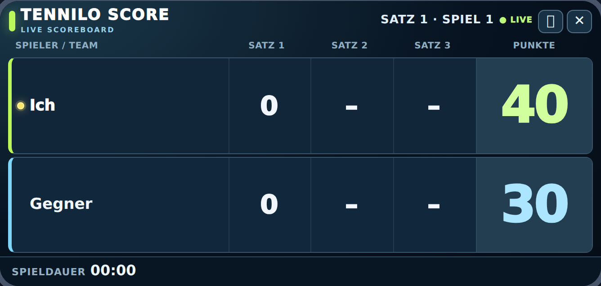

ZUFALL
Wer muss?!
Alle legen einen Finger aufs Display. Der Countdown entscheidet, wer dran ist.
DAMIT FING ALLES AN


Kein großes Portfolio. Ein kleiner Wegweiser zu den Dingen, an denen ich arbeite – und zu den Orten, an denen man mich findet.
ENTDECKEN, WAS ENTSTEHTManche Projekte beginnen mit einer Frage. Andere auf dem Tennisplatz. Hier siehst du, woran ich gerade arbeite.
TENNILO Score entsteht für Apple Watch und iPhone. Punkte zählen, den Spielverlauf verfolgen und den Kopf fürs Tennis frei haben.

 UMPIRE
UMPIRE WER MUSS?!
WER MUSS?!Fünf Projekte – darunter TENNILO Score als aktuelles Hauptprojekt sowie Tournament und Umpire unter derselben Dachmarke.

 Turniere & Regelwissen
Turniere organisieren, begleiten und sicher durchführen. Tennis-Schiri bündelt Turnierleitung, Oberschiedsrichter-Einsätze und Angebote für Tennisvereine. Dazu gehören Regelwissen, Regelworkshops und aktuelle Turniertermine.
02
Turniere & Regelwissen
Turniere organisieren, begleiten und sicher durchführen. Tennis-Schiri bündelt Turnierleitung, Oberschiedsrichter-Einsätze und Angebote für Tennisvereine. Dazu gehören Regelwissen, Regelworkshops und aktuelle Turniertermine.
02

 Zähl-App · Apple Watch · In Entwicklung
TENNILO Score – Punkte direkt am Handgelenk zählen. Eine Zähl-App für die Apple Watch mit iPhone-Ergänzung entsteht. Geplanter Betatest: 27. Dezember 2026 beim LK-Turnier in Bad Saarow; angestrebter Start im Frühjahr 2027.
03
Zähl-App · Apple Watch · In Entwicklung
TENNILO Score – Punkte direkt am Handgelenk zählen. Eine Zähl-App für die Apple Watch mit iPhone-Ergänzung entsteht. Geplanter Betatest: 27. Dezember 2026 beim LK-Turnier in Bad Saarow; angestrebter Start im Frühjahr 2027.
03
 Turnierorganisation · In Entwicklung
TENNILO Tournament – Turniere digital organisieren. Unter der Dachmarke TENNILO entsteht die Web-App für Vereins- und Veranstalterturniere: Formate, Auslosungen, Spielpläne, Ergebnisse und Live-Anzeigen.
04
Schiedsrichter-App · In Konzeption
TENNILO Umpire – digitale Unterstützung für Schiedsrichter. Geplant sind eine modulare Bedienoberfläche zur Matchleitung und die Übertragung von Spielständen auf externe Anzeigetafeln.
05
Turnierorganisation · In Entwicklung
TENNILO Tournament – Turniere digital organisieren. Unter der Dachmarke TENNILO entsteht die Web-App für Vereins- und Veranstalterturniere: Formate, Auslosungen, Spielpläne, Ergebnisse und Live-Anzeigen.
04
Schiedsrichter-App · In Konzeption
TENNILO Umpire – digitale Unterstützung für Schiedsrichter. Geplant sind eine modulare Bedienoberfläche zur Matchleitung und die Übertragung von Spielständen auf externe Anzeigetafeln.
05
Echte Screenshots aus der TENNILO-Score-Demo – vom Handgelenk über das Handy bis zur Live-Anzeige.


Abseits des Tennisplatzes entsteht eine kleine Familie verrückter Mini-Apps. Schnell verstanden, mit einem Augenzwinkern und für zwischendurch.
Alle legen einen Finger aufs Display. Der Countdown entscheidet, wer dran ist.
Stopp die Uhr bei exakt 5, 10 oder 15 Sekunden. Klingt leichter, als es ist.
Grüne Kreise treffen, korallfarbene meiden. 20 Sekunden voller Fingertempo.
Die Kaffeetasse wackelt. Halte dagegen, damit möglichst wenig daneben geht.
Den Ballon weiter aufblasen oder aufhören? Mehr Risiko bringt mehr Punkte.
Absurde Schätzfragen für zwei bis vier Personen. Wer liegt am nächsten?
Tennisturniere, digitale Werkzeuge und kleine Ideen für den Alltag haben auf den ersten Blick wenig gemeinsam. Mich reizt daran, Dinge einfacher zu machen – und aus einer Idee etwas Eigenes entstehen zu lassen.
Und deutlich mehr als Tennis & Technik.
Die einen kennen mich vom Tennisplatz. Andere über meine Apps oder Websites. Aber da gibt es natürlich noch einiges mehr.
Ich reise gern, höre Musik und genieße gutes Essen. Vor allem aber gehören Freunde und Familie zu meinem Leben – und die Zeit mit ihnen ist durch kein noch so spannendes Projekt zu ersetzen.
Und dann sind da noch meine Hobbys, neue Eindrücke und Dinge, die einfach Spaß machen. Nicht alles braucht einen Projektplan.

Sechs Seiten von mir, die auf einer reinen Projektseite bisher keinen Platz hatten.
Neue Orte entdecken, Eindrücke sammeln und zwischendurch einfach einmal den Blick wechseln.
26 ORTE ENTDECKENMusik gehört für mich dazu – mal ganz nebenbei, mal mit voller Aufmerksamkeit.
Restaurant, Bistro oder Imbissbude – ich probiere gerne neue Locations aus. Dazu kommt meine HRC-Sammlung.
MEINE HRC-STOPPSZusammensitzen, erzählen, lachen und die gemeinsame Zeit genießen.
Zeit miteinander verbringen. Persönlich sein, ohne jedes Detail ins Internet zu stellen.
Eisbären-Fan seit 1998, regelmäßig Comedy in Berliner Clubs – gerne auch neue, kleine Bühnen.
MEHR ÜBER DIE HOBBYSAbseits von Tennis und Code darf es auch laut werden. Oder einfach richtig lustig.
Seit 1998 bin ich Fan der Eisbären. Eine Leidenschaft, die schon ziemlich lange hält – und keineswegs nur nebenbei läuft.
Regelmäßig in Berliner Comedyclubs unterwegs. Am liebsten in kleinen Locations – überwiegend auf Deutsch, inzwischen aber auch viel auf Englisch. Berlin hat richtig gute Comedians, und neue Bühnen probiere ich gerne aus.
Manche Orte einmal. Andere offenbar nicht ohne Grund mehrfach.
Immer auf der Suche nach neuen Locations zum Essengehen. Ob Restaurant, Bistro oder Imbissbude: Alles hat seinen Reiz. Entscheidend ist nicht die Größe, sondern dass es schmeckt.
Neben neuen Restaurants und kleinen Geheimtipps gehört auch diese Sammlung dazu: Hard Rock Cafes, die ich besucht habe – einschließlich zweier Londoner Adressen.
London ist bewusst zweimal dabei: Original und Piccadilly Circus. Kein Ranking und keine Restaurant-Empfehlung – einfach meine Sammlung.
Nicht alles gehört ins Netz. Manche Geschichten sind am schönsten, wenn man sie mit den Menschen teilt, die dabei waren.
Auch
anderswo.
Kurze Wege statt langer Texte. Hier geht’s zu meinen Profilen und den Kanälen der Projekte.